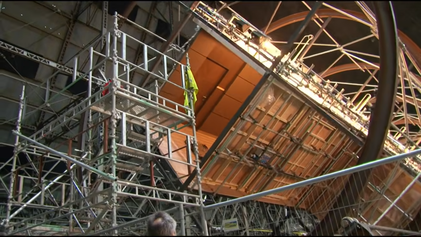

Кадры и физика 5 уровней погружения
Кликайте по уровням, чтобы детально изучить кадры сцены, тайминг и архитектурную задачу
СИНХРОНИЗАЦИЯ: 100% В РЕАЛЬНОМ ВРЕМЕНИ
ПРАКТИЧЕСКИЕ СПЕЦЭФФЕКТЫ
NO GREEN SCREEN
Как Нолан снял драку в невесомости: 30-метровая вращающаяся центрифуга

Архивный кадр: Инженерный ангар Cardington Airship Sheds в Бедфордшире, Великобритания
В эпоху, когда Marvel и Голливуд полностью перешли на CGI и зеленые экраны, Кристофер Нолан и художник-постановщик Гай Хендрикс Диас построили настоящий коридор отеля длиной 30 метров внутри вращающихся стальных колец, приводимых в движение двумя электромоторами мощностью по 55 кВт.
Джозеф Гордон-Левитт и каскадеры тренировались больше двух недель, чтобы научиться драться на вращающихся стенах и потолке со скоростью до 8 оборотов в минуту. Камеры крепились непосредственно к каркасу коридора, создавая иллюзию, что комната неподвижна, а люди падают на стены.
💡 Парадокс восприятия: Именно этот эпизод до сих пор выглядит современно, в то время как компьютерная графика фильмов 2010 года безнадежно устарела.